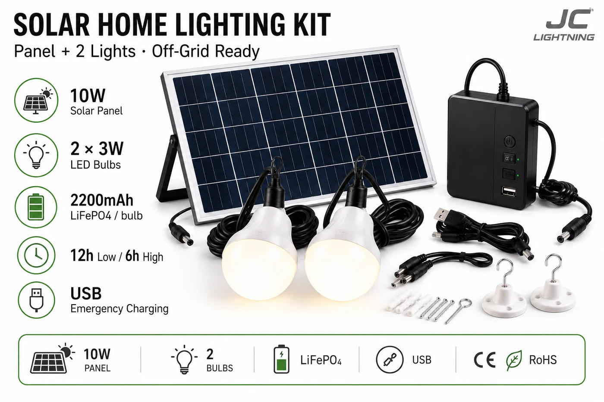

太阳能家用照明套件(2 灯)
完整即插即用的家用系统——一块 10W 光伏板通过 5m 线缆驱动两颗 3W LED 灯泡,带 USB 应急充电,零售盒用图片讲清安装。

对乡村和离网家庭,这套套件是生活质量的一次小飞跃。一块 10W 光伏板通过 5m 线缆为两颗 3W 灯泡(每间房一颗)充电,可整夜低档照明或高档亮 6 小时,还能用 USB 给手机充电。图解零售盒让它无需说明书即可销售与安装——对首次买太阳能的用户和非正规零售渠道很重要。
规格参数
| 光伏板 | 10W |
|---|---|
| 灯具 | 2× 3W LED 灯泡 |
| 线缆 | 5m |
| 电池 | 每灯 2200mAh 磷酸铁锂 |
| 续航时间 | 低档 12h / 高档 6h |
| 附加 | USB 应急充电 |
| 包装 | 含图解指南的零售盒 |
| 认证 | CE + RoHS |
为什么选它
一块板点两间房。是真正的家庭系统,而非单灯——客单更高、价值更高。
自带销售力。图解零售盒适合首次买家与非正规零售。
内置手机充电。USB 输出让它日常实用,带动配件复购。
已认证、支持 OEM。每份报价附 CE + RoHS;可定制包装与品牌。
为这些市场而建撒哈拉以南非洲和拉美的乡村与离网家庭——为未通电和易停电人群打造的入门级家庭太阳能系统。